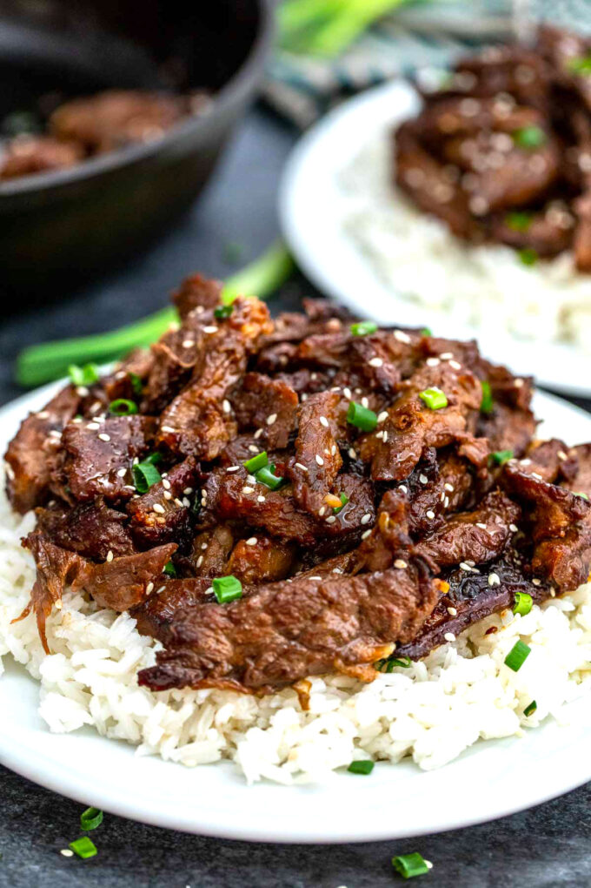

Beef Bulgogi

Description
Bulgogi, or Korean barbecue, literally means "fire meat." Thin slices of beef (or sometimes pork) are marinated in a sweet-savory sauce, then grilled to juicy and flavorful perfection.
This recipe is more ambitious than the last two. For you meat-lovers out there, this beef recipe won't only be ample, but it's so finger-licking good that it will surely become a staple in any household.
Ingredients
serves four
- 5 tablespoons soy sauce
- ¼ cup chopped green onion
- 2 ½ tablespoons white sugar
- 2 tablespoons minced garlic
- 2 tablespoons sesame seeds
- 2 tablespoons sesame oil
- ½ teaspoon ground black pepper
- 1 pound flank steak, thinly sliced
Steps
- Whisk soy sauce, green onion, sugar, garlic, sesame seeds, sesame oil, and pepper together in a bowl.
- Place flank steak slices in a shallow dish. Pour marinade over top. Cover and refrigerate for at least 1 hour or overnight.
- Preheat an outdoor grill for high heat, and lightly oil the grate.
- Quickly grill flank steak slices on the preheated grill until slightly charred and cooked through, 1 to 2 minutes per side.